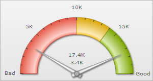
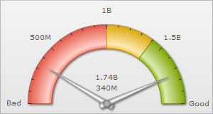
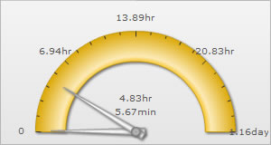

Number Formatting > Number Scaling |
Number scaling lets you define your own scales for numbers and then apply it to all numbers on the chart. |
| Basic Example |
Let's start with the most basic example which is already defined in FusionWidgets - thousands and millions scale. If your numbers on the chart are greater than 1000, FusionWidgets gives you the option to scale them to K (Thousands) or M (Millions). For example, if you plot an angular gauge with dial values as 3400 and 17400 and use number scaling by setting <chart ... formatNumberScale='1' ...>, you'll see the following chart: |
 |
| As you can see above, FusionWidgets has scaled the numbers down to K. By default, FusionWidgets has the K,M (1000,1000) scaling defined for each chart. You can, however, change it to anything you wish. Let's see it in the next example. |
| Adding billions to default scaling |
FusionWidgets, by default, has 1000,1000 (K,M) scaling defined for all charts. It doesn't have the scaling for billions defined. Let's modify the number scaling to add billion so that the final scale looks like 1000,1000,1000 (K,M,B). This scale, in human terms, would look something as under: 1000 = 1 K Now, to convert this scale into FusionWidgets XML format, you'll have to do the following:
When you now view a chart containing data in billions, you'll see as under. Note that the chart now contains figure both in millions and billions. |
|  |
| The XML for the above chart is: |
| <chart lowerLimit='0' upperLimit='2000000000' lowerLimitDisplay='Bad' upperLimitDisplay='Good' numberScaleValue='1000,1000,1000' numberScaleUnit='K,M,B' formatNumberScale='1'> <colorRange> <color minValue='0' maxValue='1000000000' code='FF654F'/> <color minValue='1000000000' maxValue='1400000000' code='F6BD0F'/> <color minValue='1400000000' maxValue='2000000000' code='8BBA00'/> </colorRange> <dials> <dial value='340000000' rearExtension='10'/> <dial value='1740000000' rearExtension='10'/> </dials> </chart> |
| Another Example - Putting time in scale |
Let's consider another example where we intend to plot time related figures on the chart. Say we're plotting a chart which indicates the time taken by a machine to do a particular task. The task can take any time ranging from a few seconds to few days. And we've the data for the task in seconds itself. Now, if we were to show all the data on the chart in seconds only, it won't appear too legible. What we can do is build a scale indicating time and then specify it to the chart. This scale, in human terms, would look something as under: 60 seconds = 1 minute Now, to convert this scale into FusionCharts XML format, you'll have to do it as under:
The entire XML looks as under: |
| <chart lowerLimit='0' upperLimit='100000' numberScaleValue='60,60,24,7' numberScaleUnit='min,hr,day,wk' formatNumberScale='1'> <colorRange> <color minValue='0' maxValue='100000' code='F6BD0F'/> </colorRange> <dials> <dial value='340' rearExtension='10'/> <dial value='17400' rearExtension='10'/> </dials> </chart> |
When you now view the chart, you'll see that all the data has been automatically scaled to the best value. Like: 100000s - the upper limit was converted to 1.16 days |
|  |
| Storage Size Example |
Take another example, where you're plotting a chart indicating memory usage of a network server. The usage can be from few bits to a few gigabytes. Again, you've all your data in bits - so we can render the range as under: 8 bits = 1 Byte And the XML can be written as under: <chart defaultNumberScale='bits' numberScaleValue='8,1024,1024,1024,1024' numberScaleUnit='bytes,KB,MB,GB,TB' formatNumberScale='1'> |
| Length/Distance Example |
Let's consider another length/distance example. The standard length/distance range can be rendered as under (with inches being the default unit): 12 inches = 1 feet So, we can write the XML as under: |